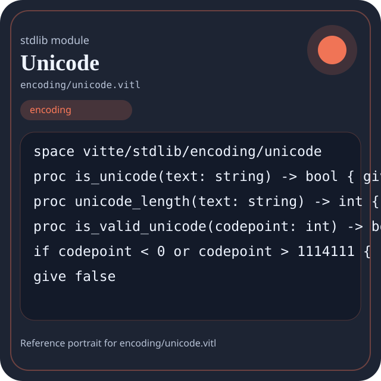

Stdlib module encoding/unicode.vitl
This page is a wiki-style reference for one concrete stdlib file. It explains what the file owns, where it fits in the family, and how to decide whether this is the right surface to depend on.

encoding/unicode.vitl.Family: encoding
Kind: public stdlib surface
Page style: this reference follows the same “encyclopedic card + portrait + usage contract” logic as the keyword pages, but for stdlib modules.
Summary
- Overview
- Purpose
- Taxonomy
- Implementation profile
- Top-level API inventory
- Position in family
- Declaration map
- Representative signatures
- How to use this module
- User example
- Keyword coverage
- Source shape
- Source landmarks
- Source organization
- Complete API catalog
- Integration boundaries
- Composition guidance
- Relationship table
- Neighbor modules
Overview
| Field | Value |
|---|---|
| Path | encoding/unicode.vitl |
| Family | encoding |
| Kind | public stdlib surface |
| Line count | 55 |
| Declared procedures | 8 |
| Declared forms/picks | 0 |
`encoding/unicode.vitl` is a public stdlib surface inside the `encoding` family. It should be read as one focused slice of the broader family responsibility: Text and byte encoding surfaces such as utf, base64, url, hex, html, legacy encodings, and unicode helpers.
Purpose
This file should be chosen because of responsibility, not because its name “sounds close enough”. Inside the encoding family, it carries one focused part of the contract and keeps that responsibility separate from neighboring concerns.
- A JSON payload can be rendered first, then base64-encoded for transport.
- A path or URL can be normalized before joining it with host-facing code.
Taxonomy
Think of this page as a generated encyclopedia entry rather than a hand-written tutorial. The goal is to show what kind of module this is, how dense it is, and what reading strategy makes sense before depending on it.
- Medium procedure surface: this file groups several related operations behind one namespace.
- Minimal top-level dependencies: the module reads as mostly self-contained from its opening declarations.
Implementation profile
This profile is inferred directly from the source text. It does not replace reading the file, but it tells you quickly whether the module is mostly declarative, loop-heavy, branch-heavy, or organized around many small exits.
| Signal | Count | What it suggests |
|---|---|---|
if | 5 | Branching density and local decision-making. |
while | 0 | Loop-heavy or iterative implementation style. |
for | 0 | Collection-style traversal at source level. |
match | 0 | Variant-driven branching or grammar-style decoding. |
let | 9 | Local state and intermediate value density. |
give | 13 | Number of explicit exit points and result shaping. |
Top-level API inventory
| Surface | Items |
|---|---|
| Procedures | is_unicode, unicode_length, is_valid_unicode, is_BMP, is_supplementary, codepoint_to_utf16, utf16_to_codepoint, grapheme_count |
| Forms | none declared at top level |
| Picks | none declared at top level |
| Constants | none declared at top level |
| Exports | none declared at top level |
Imported surfaces
This file does not advertise a top-level `use` surface in its opening declarations. That often means it is either self-contained or an aggregation layer.
Position in family
This file is module 6 of 9 in the encoding family when ordered by path. By procedure count it ranks 3, and by line count it ranks 5. Those ranks are useful as rough signals of breadth, not as quality judgments.
Declaration map
The declaration map turns raw source into a scan-friendly catalog. It is useful when the file is large enough that a reader wants to orient by kinds of surfaces first.
| Line | Name | Kind | Role |
|---|---|---|---|
| 1 | vitte/stdlib/encoding/unicode | space | Declares the namespace that anchors this file in the stdlib tree. |
| 3 | is_unicode | proc | Represents one top-level surface in the file contract and should be read as part of the module boundary. |
| 5 | unicode_length | proc | Represents one top-level surface in the file contract and should be read as part of the module boundary. |
| 7 | is_valid_unicode | proc | Represents one top-level surface in the file contract and should be read as part of the module boundary. |
| 17 | is_BMP | proc | Represents one top-level surface in the file contract and should be read as part of the module boundary. |
| 21 | is_supplementary | proc | Represents one top-level surface in the file contract and should be read as part of the module boundary. |
| 25 | codepoint_to_utf16 | proc | Represents one top-level surface in the file contract and should be read as part of the module boundary. |
| 38 | utf16_to_codepoint | proc | Represents one top-level surface in the file contract and should be read as part of the module boundary. |
| 52 | grapheme_count | proc | Represents one top-level surface in the file contract and should be read as part of the module boundary. |
The table is exhaustive for top-level declarations of the selected kinds. This file declares 9 matching surfaces.
Representative signatures
These signatures are shown in source order so the page keeps the feel of a reference manual, not just a keyword cloud.
proc is_unicode(text: string) -> bool { give true }(line 3)proc unicode_length(text: string) -> int { give text.len }(line 5)proc is_valid_unicode(codepoint: int) -> bool {(line 7)proc is_BMP(codepoint: int) -> bool {(line 17)proc is_supplementary(codepoint: int) -> bool {(line 21)proc codepoint_to_utf16(cp: int) -> [int] {(line 25)proc utf16_to_codepoint(high: int, low: int) -> int {(line 38)proc grapheme_count(text: string) -> int {(line 52)
How to use this module
Start by reading the file as an ownership boundary. Ask three questions: what enters this module, what stable types or procedures it exports, and what adjacent module should stay outside of it.
- Read
spaceand top-level imports first so the ownership boundary ofencoding/unicode.vitlis explicit. - Traverse procedures in source order; the early helpers usually explain the naming and numeric conventions used later.
- Only after that compare neighbor modules, because the right boundary choice matters more than memorizing one helper name.
User example
This example is generated from the actual stdlib module surface. Its job is not to be the smallest snippet possible; its job is to show a realistic consumer-shaped file that exercises the module and mirrors the language keywords the module itself relies on.
space demo/encoding_unicode
proc run_example() -> string {
let entries = codepoint_to_utf16(1)
let ready: bool = is_unicode("sample")
let failed: bool = false
let stable: bool = ready and true
let fallback: bool = ready or false
if ready {
give "not-ready"
} else {
give "ok"
}
}Keyword coverage
This table makes the “all keywords of the module” requirement auditable. It compares the detected Vitte keywords in the source file with the generated consumer example above.
| Keyword | Present in module source | Used in generated user example |
|---|---|---|
space | yes | yes |
proc | yes | yes |
let | yes | yes |
if | yes | yes |
else | yes | yes |
give | yes | yes |
true | yes | yes |
false | yes | yes |
and | yes | yes |
or | yes | yes |
The generated snippet exercises every detected Vitte keyword used by this module.
Source shape
space vitte/stdlib/encoding/unicode
proc is_unicode(text: string) -> bool { give true }
proc unicode_length(text: string) -> int { give text.len }
proc is_valid_unicode(codepoint: int) -> bool {
if codepoint < 0 or codepoint > 1114111 {
give false
}
if codepoint >= 55296 and codepoint <= 57343 {
give false
}The excerpt is not meant to replace the file. It exists to make the module recognizable at first glance, the same way a Wikipedia infobox helps the reader orient before reading the whole article.
Source landmarks
Large files are easier to retain when they have visible landmarks. When the source contains explicit section banners, they are surfaced here; otherwise the first major declarations are used as anchors.
- Line 1:
space vitte/stdlib/encoding/unicode - Line 3:
proc is_unicode(text: string) -> bool { give true } - Line 5:
proc unicode_length(text: string) -> int { give text.len } - Line 7:
proc is_valid_unicode(codepoint: int) -> bool { - Line 17:
proc is_BMP(codepoint: int) -> bool { - Line 21:
proc is_supplementary(codepoint: int) -> bool { - Line 25:
proc codepoint_to_utf16(cp: int) -> [int] { - Line 38:
proc utf16_to_codepoint(high: int, low: int) -> int {
Source organization
When a file carries its own internal chaptering, those chapters usually reveal the intended reading order better than a flat symbol list. This section reconstructs that organization from the source itself.
File surfaces
Top-level items: 9. Procedures: 8. Data surfaces: 0. Constants: 0.
First visible names: vitte/stdlib/encoding/unicode, is_unicode, unicode_length, is_valid_unicode, is_BMP, is_supplementary, codepoint_to_utf16, utf16_to_codepoint, grapheme_count
Complete API catalog
This catalog is the exhaustive file-level index for the module. It is intentionally closer to a generated encyclopedia appendix than to a tutorial summary.
Procedures
| Line | Name | Signature | Role |
|---|---|---|---|
| 3 | is_unicode | proc is_unicode(text: string) -> bool { give true } | Represents one top-level surface in the file contract and should be read as part of the module boundary. |
| 5 | unicode_length | proc unicode_length(text: string) -> int { give text.len } | Represents one top-level surface in the file contract and should be read as part of the module boundary. |
| 7 | is_valid_unicode | proc is_valid_unicode(codepoint: int) -> bool { | Represents one top-level surface in the file contract and should be read as part of the module boundary. |
| 17 | is_BMP | proc is_BMP(codepoint: int) -> bool { | Represents one top-level surface in the file contract and should be read as part of the module boundary. |
| 21 | is_supplementary | proc is_supplementary(codepoint: int) -> bool { | Represents one top-level surface in the file contract and should be read as part of the module boundary. |
| 25 | codepoint_to_utf16 | proc codepoint_to_utf16(cp: int) -> [int] { | Represents one top-level surface in the file contract and should be read as part of the module boundary. |
| 38 | utf16_to_codepoint | proc utf16_to_codepoint(high: int, low: int) -> int { | Represents one top-level surface in the file contract and should be read as part of the module boundary. |
| 52 | grapheme_count | proc grapheme_count(text: string) -> int { | Represents one top-level surface in the file contract and should be read as part of the module boundary. |
Integration boundaries
Within encoding, this file should remain focused. If a future helper changes the host boundary, scheduling boundary, or data-shape boundary, it probably belongs in a neighbor module instead of being added here by convenience.
- Family responsibility: Text and byte encoding surfaces such as utf, base64, url, hex, html, legacy encodings, and unicode helpers.
- Family architecture role: Use `encoding` when values cross a textual or byte-oriented boundary and representation matters.
Composition guidance
Choose this module when
- Choose
encoding/unicode.vitlwhen the main question is owned by this module rather than by transport, storage, orchestration, or user-interface code. - A JSON payload can be rendered first, then base64-encoded for transport.
- A path or URL can be normalized before joining it with host-facing code.
Pause before extending it when
- Avoid extending this file when the new helper mostly changes the boundary to host I/O, runtime coordination, or foreign integration instead of staying inside
encoding. - Check nearby modules such as
encoding/base64.vitl,encoding/hex.vitl,encoding/html.vitlbefore adding convenience wrappers here.
Relationship table
This table keeps the page closer to a real encyclopedia entry: a module is easier to understand when compared with its nearest alternatives in the same family.
| Neighbor | Procedures | Data surfaces | Why compare it |
|---|---|---|---|
encoding/base64.vitl | 4 | 0 | Shares the same family boundary but carries a distinct slice of responsibility. |
encoding/hex.vitl | 4 | 0 | Shares the same family boundary but carries a distinct slice of responsibility. |
encoding/html.vitl | 7 | 0 | Shares the same family boundary but carries a distinct slice of responsibility. |
encoding/legacy.vitl | 7 | 0 | Shares the same family boundary but carries a distinct slice of responsibility. |
encoding/url.vitl | 5 | 0 | Shares the same family boundary but carries a distinct slice of responsibility. |
encoding/utf.vitl | 13 | 0 | Shares the same family boundary but carries a distinct slice of responsibility. |
encoding/utf8.vitl | 4 | 0 | Shares the same family boundary but carries a distinct slice of responsibility. |
encoding.vitl | 53 | 0 | Shares the same family boundary but carries a distinct slice of responsibility. |